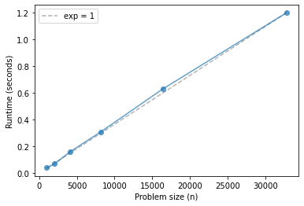

Timing Redis Operations¶
Click here to run this notebook on Colab
Performance of lpush and rpush¶
The Redis documentation says
The main features of Redis Lists from the point of view of time complexity are the support for constant time insertion and deletion of elements near the head and tail, even with many millions of inserted items. Accessing elements is very fast near the extremes of the list but is slow if you try accessing the middle of a very big list, as it is an O(N) operation.
In class recently, we saw some behavior that suggested that lpush might be linear (as we would expect from an array list, like Python lists) rather than constant time (as we would expect from a linked list).
So let’s find out.
import sys
IN_COLAB = 'google.colab' in sys.modules
if IN_COLAB:
!pip install redis-server
!/usr/local/lib/python*/dist-packages/redis_server/bin/redis-server --daemonize yes
else:
!redis-server --daemonize yes
91563:C 04 Nov 2021 14:09:47.144 # oO0OoO0OoO0Oo Redis is starting oO0OoO0OoO0Oo
91563:C 04 Nov 2021 14:09:47.144 # Redis version=5.0.3, bits=64, commit=00000000, modified=0, pid=91563, just started
91563:C 04 Nov 2021 14:09:47.144 # Configuration loaded
try:
import redis
except ImportError:
!pip install redis
import redis
r = redis.Redis()
from os.path import basename, exists
def download(url):
filename = basename(url)
if not exists(filename):
from urllib.request import urlretrieve
local, _ = urlretrieve(url, filename)
print('Downloaded ' + local)
download('https://github.com/AllenDowney/DSIRP/raw/main/timing.py')
lpush¶
def lpush(n):
key = 'lpush_test'
[r.lpush(key, x) for x in range(n)]
r.delete(key)
def rpush(n):
key = 'rpush_test'
[r.rpush(key, x) for x in range(n)]
r.delete(key)
from timing import run_timing_test
ns, ts = run_timing_test(rpush)
1024 0.040000000000000036
2048 0.06999999999999984
4096 0.16000000000000014
8192 0.31000000000000005
16384 0.6299999999999999
32768 1.1999999999999997
from timing import plot_timing_test
plot_timing_test(ns, ts, scale='linear')
